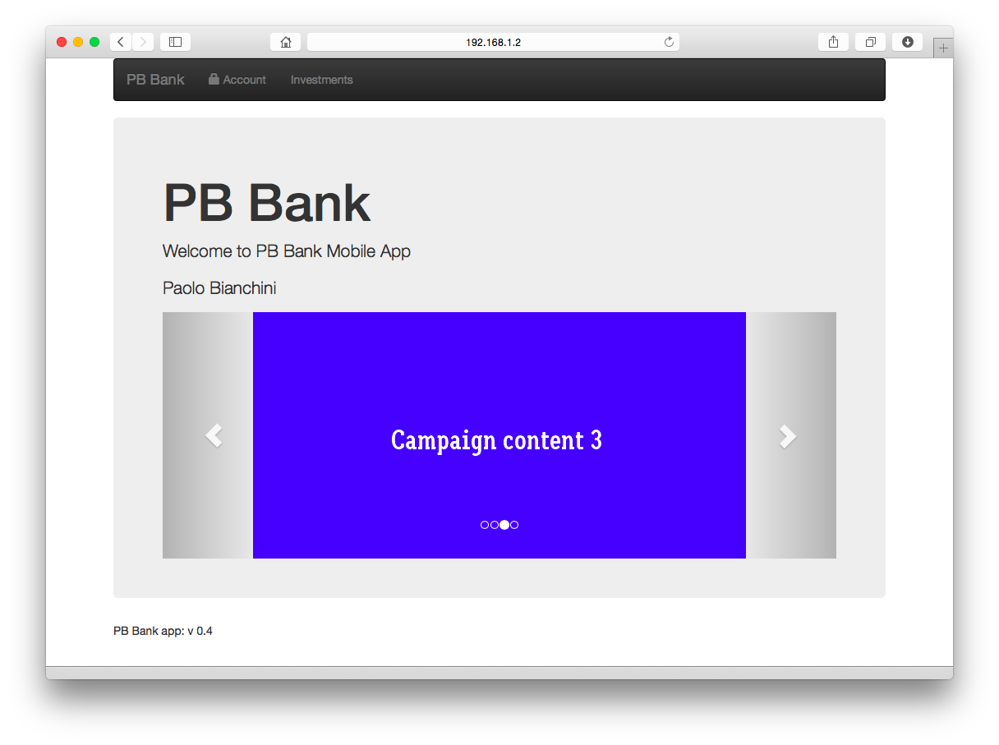
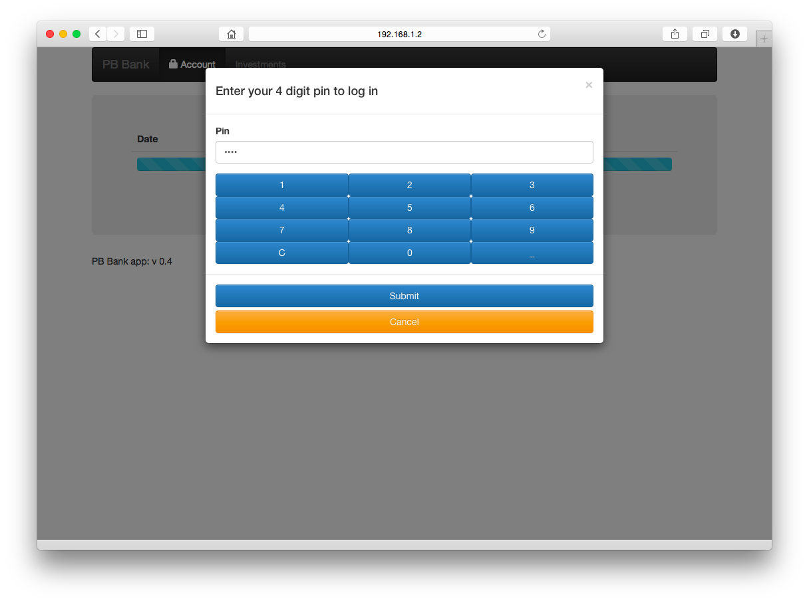
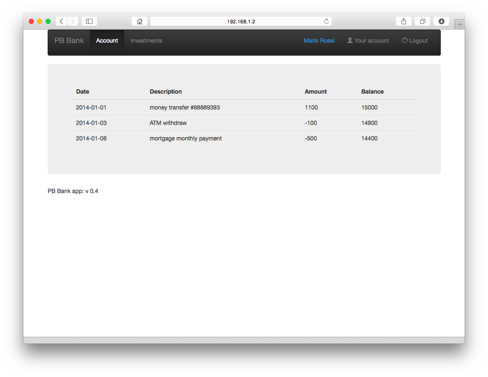
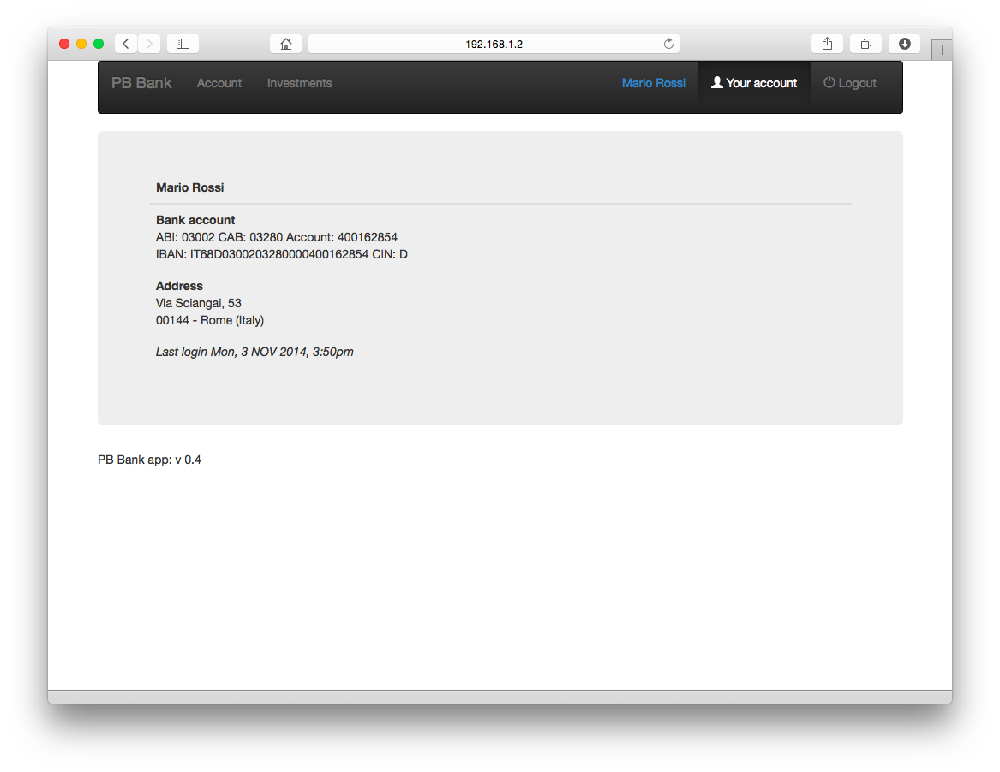
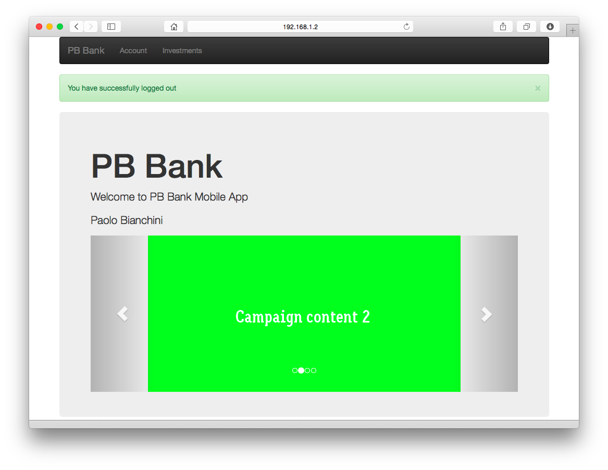
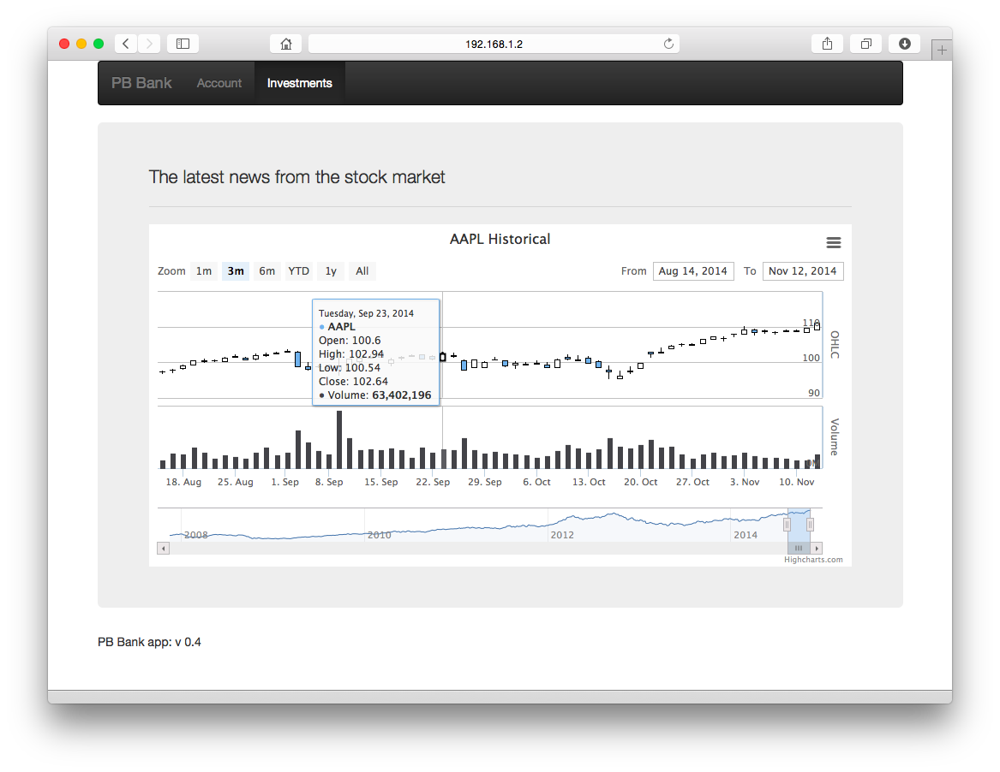

Application overview
Upon startup the application presents to the user a welocme screen where images, ads or other public content can be fetched from Internet.
In order to achieve this I chose to utilize the image carousel element loading placeholder images from a site.

The navigation bar presents sections to the user who can navigate both protected and un-protected areas. I have inserted an example for each one. The Account tab is protected and requires the user to log in. The investments tab provides public info an it is not protected.
What is happening at a code level is that some adapter calls or resources are protected by Workrlight security tests and some are not. when the user requests protected resorces the Owrklight framework checks if the user is connected and, if needed, executes the need logic to manage logging in.

The sorce code is instrumented for single and double step authentications. In the double step implementation the application asks for the email (used as userid) and password couple first; if that check is passed, the application asks for a 4 digit pin. The adapter logic behind the pin check can and should be extended to implement a more meaning ful pin generation than just reading form a database.

Upon credential checks at a server level, the app receives form the backend system specific information on the user (account number, address and so on...). such info is inserted at a server level within the user identity object and consumed at a client level to update the interface. The nav bar now shows the name of the user and provides access to profile info.


The user has an option to logout and can still navigate other public sections.

I have included an example of how to create a highchart eboject with AngularJS. Since highcharts rely on JQuery I have inserted an example that retrieves data to plot from an adapter.

Enjoy!